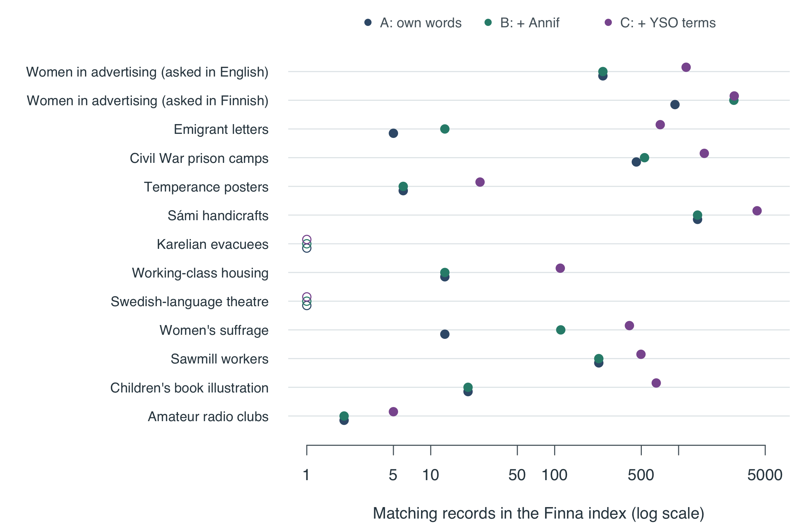
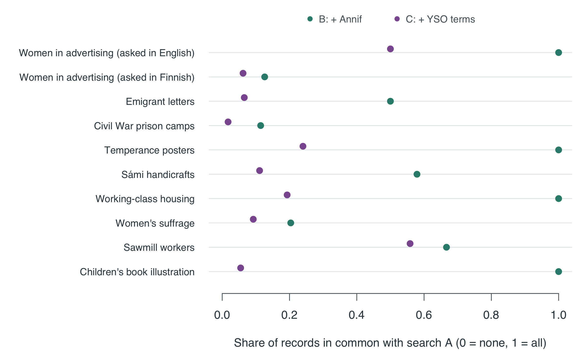
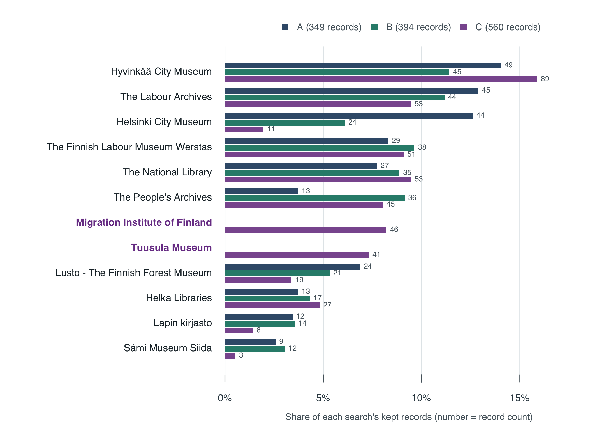
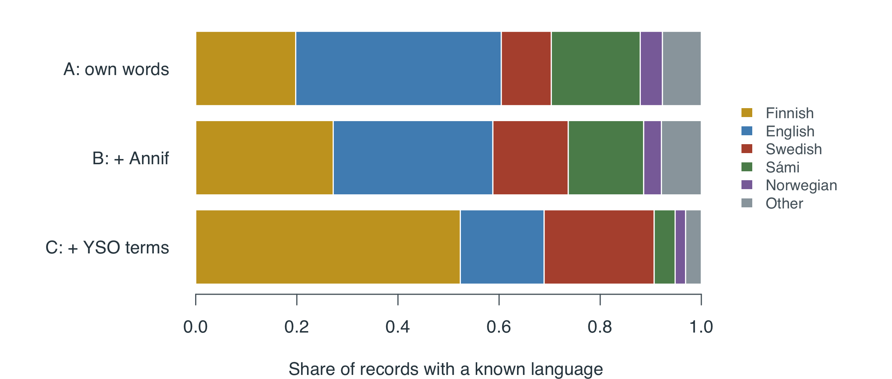
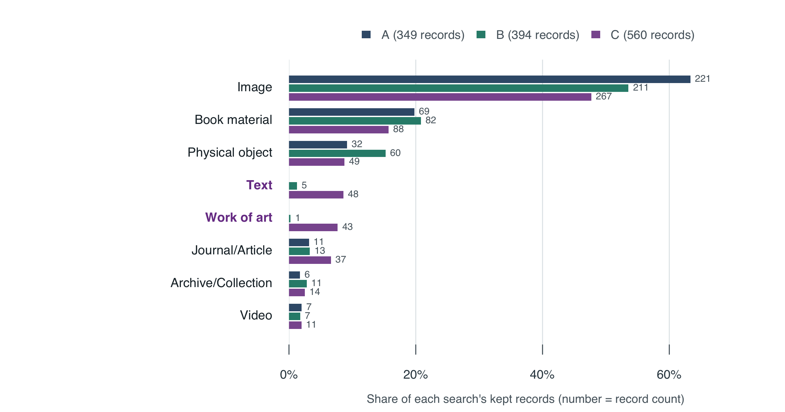

4 What we found across all questions
Eight findings, each with what we measured, what it means and what to be careful about
In short. Across the 10 questions that found records (out of 13):
- the fullest search matches far more records;
- it shows mostly different records;
- Annif often frames the question in its own way;
- other institutions come forward;
- so do Finnish- and Swedish-language records;
- the types of material shift towards texts and artworks;
- the subject words change a lot;
- in some questions the period covered moves.
Whether the new records are better is not yet known: that needs the human checking.
Left out of the averages: Karelian evacuees and Swedish-language theatre, which found no records in any search; Amateur radio clubs (its only records came from a wrong thesaurus match, clubs taken as music clubs, which heritageRAG 0.3.1 fixes). See Question by question.
1. The fullest search matches many more records
What we measured. For each search, how many records in the whole Finna index match it. This shows how wide the “net” is.
How to read this: each row is a question, each dot a search. Further right means more matching records. The scale jumps by ten at each step (1, 10, 100, 1000). An open circle at the far left means the search matched nothing.
What it means. Compared with our own words (A):
- with Annif’s words (B), the middle question matched 1.0x as many records;
- with the thesaurus terms (C), it matched 4.4x as many.
In 6 of the 10 questions, Annif’s words did not change the number of matches at all.
Be careful. More matching records does not mean better ones. A wider net also catches more that is off topic. In the first run, Annif’s Finland turned the Swedish-language theatre search into any theatre in Finland; this run no longer adds such partial words (see Problems to fix).
2. Wider searches show different records
What we measured. How many of the 60 kept records two searches have in common (the overlap: records found by both, divided by records found by either).

How to read this: a dot at 1 means the search showed exactly the same records as search A; a dot near 0 means almost entirely different records.
What it means. On average, search B shares 62% of its records with A, and search C only 19%. Because each search keeps only 60 records, the wider search C also pushed out records: on average 21 of the records that A showed are missing from C.
Be careful. The overlap only tells us the records are different. Whether those “pushed out” records mattered for the question is for the human checkers to judge.
3. Annif often frames the question in its own way
What we measured. Every subject word Annif suggested, and whether it fitted one of the researcher’s key words.
| What happened to Annif’s suggestion | Number | Share |
|---|---|---|
| same as your word | 20 | 17% |
| added to your word | 22 | 19% |
| only part of your word (not used) | 5 | 4% |
| did not fit your words | 68 | 59% |
What it means. Most suggestions (59%) did not fit the researcher’s words. Annif suggested history for 12 of the 13 questions: it reads “how did X change” as a question about history in general. Other suggestions that did not fit show a different way of describing the topic: migration (demography) (Emigrant letters); towns and cities (Working-class housing); Karelians (Karelian evacuees); woman’s status (Women’s suffrage); historia (Women in advertising (asked in Finnish)); Finns (Emigrant letters); Finnish Americans (Emigrant letters); Finland (Karelian evacuees).
These words were not searched in this study. They are a finding in themselves: they show how an automatic indexer would redraw the question’s boundaries. For the Karelian evacuees question, Annif’s internally displaced persons is in fact the official term, while the everyday word evacuees found nothing. Likewise, for Swedish-language theatre Annif suggested Swedish-speaking Finns, the thesaurus’s name for the group, while the everyday Finland Swedes found nothing.
4. Other institutions come forward
What we measured. Which museum, archive or library each record comes from. We compare the mix of institutions between searches with a 0-to-1 difference score (0 = same mix, 1 = completely different; see the word list).
| Question | B: + Annif difference | C: + YSO terms difference | Institutions in A | Institutions in C | New in C (examples) |
|---|---|---|---|---|---|
| Women in advertising (asked in English) | 0.00 | 0.07 | 7 | 5 | The Society of Swedish Literature in Finland |
| Women in advertising (asked in Finnish) | 0.32 | 0.72 | 8 | 9 | The Finnish Labour Museum Werstas; Lahti City Museums; The People’s Archives; The Finnish Migration Museum; Lusto - The Finnish Forest Museum |
| Emigrant letters | 0.18 | 0.77 | 3 | 8 | Migration Institute of Finland; Finnish Heritage Agency; Helka Libraries; Lahti City Museums; The Finnish Migration Museum |
| Civil War prison camps | 0.23 | 0.31 | 4 | 5 | Lahti City Museums; Helsinki City Museum |
| Temperance posters | 0.00 | 0.51 | 1 | 5 | The Labour Archives; Archives of the Organizations of the National Coalition Party; Helsinki City Museum; Turun kaupunginmuseo |
| Sámi handicrafts | 0.05 | 0.23 | 16 | 10 | Vaasa City Library; Anders Libraries; Kyyti-libraries |
| Working-class housing | 0.00 | 0.52 | 7 | 22 | The Finnish Arts and Culture Agency; Helsinki City Museum; Tampere City Museums (Siiri); Karkkila Ironworks Museum; Lastu Libraries |
| Women’s suffrage | 0.45 | 0.40 | 5 | 7 | The Labour Archives; The Finnish Labour Museum Werstas; The People’s Archives; Helsinki University Museum Flame |
| Sawmill workers | 0.03 | 0.09 | 11 | 12 | KAMU Espoo City Museum; Pargas hembygdsmuseum; Tampere City Museums (Siiri) |
| Children’s book illustration | 0.00 | 0.87 | 11 | 8 | Tuusula Museum; Åbo Akademi Library; The Society of Swedish Literature in Finland; Anders Libraries; Lappeenranta museums |

How to read this: all questions together, the twelve institutions with the most records. Each group of bars is one institution; the bars show its share of each search’s records, and the number is the record count. Purple, bold names appear only in B or C; grey names disappear in C. Charts for each question are on Compare searches.
What it means. The median difference score for institutions between A and C is 0.46, against 0.04 between A and B. The thesaurus terms reach collections that our own English words do not, often regional museums and specialist archives whose records are written in Finnish or Swedish. In 8 of 10 questions the difference in institutions between A and C is bigger than chance alone would give with this many records.
Be careful. These are the institutions among 60 records per search, not across all of Finna. A museum that is “new in C” may well have more relevant material that no search showed.
5. Finnish- and Swedish-language records come forward
What we measured. The language of each record, where Finna gives one.

How to read this: each bar is one search, all questions together. The coloured parts show which languages its records are in, counting only records whose language is known.
| Search | Records | Language known | Finnish | Swedish | English | Sámi |
|---|---|---|---|---|---|---|
| A: own words | 349 | 91 | 20% | 10% | 41% | 18% |
| B: + Annif | 394 | 114 | 27% | 15% | 32% | 15% |
| C: + YSO terms | 560 | 193 | 52% | 22% | 17% | 4% |
What it means. Our English key words mostly find English-language records and records with no language at all (photographs and objects). The thesaurus terms in C bring Finnish-language records forward (20% → 52%) and Swedish-language records (10% → 22%). Sámi-language records go the other way (18% → 4%, or 16 records → 8): the study added Finnish, Swedish and English terms only, so the national languages took space in the top 60 that Sámi-language records had held. This is a clear example of how a standard vocabulary can shift whose material is visible. The Sámi test checks this directly: when search C also used the thesaurus’s Northern Sámi names, it kept 23 Sámi-language records instead of 8.
Be careful. Only 31% of all kept records have a language at all; most are images and objects. Read these shares as “among records with a language”.
6. The types of material shift
| Search | Image | Book material | Physical object | Journal/Article | Text | Work of art |
|---|---|---|---|---|---|---|
| A: own words | 63% | 20% | 9% | 3% | 0% | 0% |
| B: + Annif | 54% | 21% | 15% | 3% | 1% | 0% |
| C: + YSO terms | 48% | 16% | 9% | 7% | 9% | 8% |

What it means. Images make up most records in every search, but their share falls in C, while texts, journal articles and works of art come in. The median difference score for material types between A and C is 0.10. In 5 of 10 questions the difference in material types between A and C is bigger than chance alone would give with this many records.
7. The subject words change a lot
What we measured. The subject words that catalogues attached to the records, and how the mix of subject words differs between searches.
| Question | Top subject words in A | New top words in C |
|---|---|---|
| Emigrant letters | brev, brevväxling, migration, utvandrare, utvandring | siirtolaiset, amerikansuomalaiset, muuttoliike, siirtolaisuus, ulkosuomalaiset |
| Women’s suffrage | äänioikeus, kvinnor, kvinnosaksrörelser, naisasialiikkeet, naiset | women’s rights movements, women’s rights organisations, äänioikeus, naiset, naisen asema |
| Children’s book illustration | lastenkirjallisuus, koivu, kuvittajat, suomi, kuvitukset | illustration (art forms), illustrations, ungdomslitteratur, barnlitteratur, nuortenkirjallisuus |
What it means. The subject words change more than anything else: the median difference score between A and C is 0.51. In 8 of 10 questions the difference in subject words between A and C is bigger than chance alone would give with this many records. Partly this is simply language (siirtolaiset is Finnish for emigrants). Partly the records really are about different things, so a researcher would build a different story from them.
Be careful. The same idea written in two languages counts as two different subject words here, which makes this difference look larger than it is.
8. Time coverage changes in some questions
| Question | Middle year A | Middle year B | Middle year C | Change A to C (years) |
|---|---|---|---|---|
| Women in advertising (asked in English) | 1960 | 1960 | 1960 | +0 |
| Women in advertising (asked in Finnish) | 1955 | 1950 | 1960 | +5 |
| Emigrant letters | 1907 | 1903 | 1898 | -9 |
| Civil War prison camps | 1918 | 1918 | 1918 | +0 |
| Temperance posters | 1920 | 1920 | 1926 | +6 |
| Sámi handicrafts | 1994 | 1994 | 1996 | +2 |
| Working-class housing | 1915 | 1915 | 1939 | +24 |
| Women’s suffrage | 1907 | 1906 | 1906 | -1 |
| Sawmill workers | 1924 | 1923 | 1923 | -1 |
| Children’s book illustration | 1942 | 1942 | 1930 | -12 |
What it means. For most questions the period stays the same (the year range is fixed in the search). In 5 questions the middle year moves by five years or more, for example Women in advertising (asked in Finnish) (+5 years), Emigrant letters (-9 years), Temperance posters (+6 years), Working-class housing (+24 years), Children’s book illustration (-12 years). The thesaurus terms can reach older or newer material than our own words do.
All the main numbers in one table
| Search | Search words (average) | Matching records (middle value) | Records kept (average) | Institutions (average) | Found only through new words | Match hidden |
|---|---|---|---|---|---|---|
| A: own words | 2.0 | 124 | 34.9 | 7.3 | 0% | 42% |
| B: + Annif | 3.7 | 170 | 39.4 | 8.7 | 7% | 46% |
| C: + YSO terms | 11.5 | 686 | 56.0 | 9.1 | 45% | 25% |
Found only through new words is the share of records that only match through a word added by Annif or the thesaurus. Match hidden is the share where none of the search words can be seen in the part of the record Finna shows us (see How it works).
The ready-made figures for the paper are in results/final/paper/; Paper figures shows and explains them.